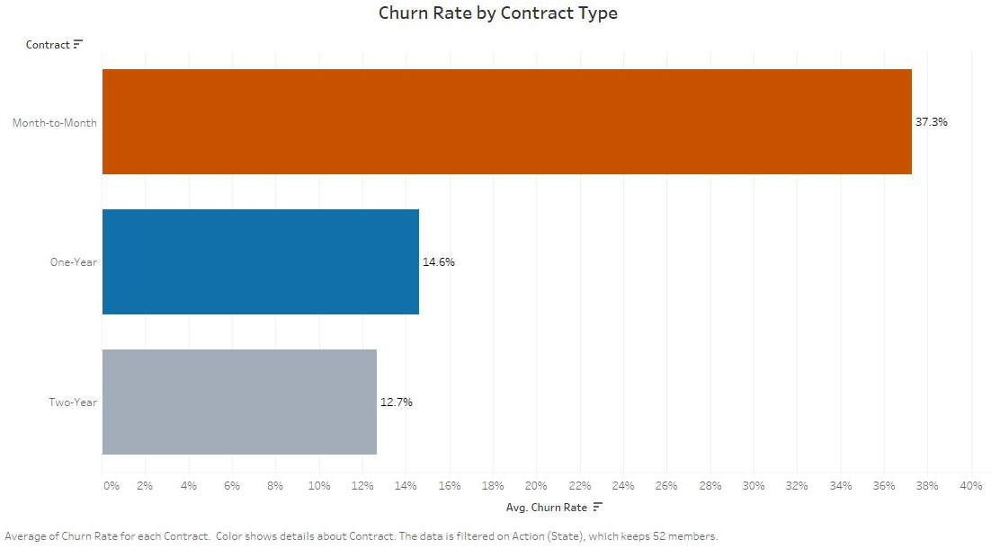

Business question
Who is churning, where is churn concentrated, and which patterns deserve a closer look?
Approach
How the work was done
- Built four views around churn by income, contract type, state, and payment method.
- Added interactive Contract and State filters plus two headline KPIs for quick review.
- Used numeric labels and contrasting colors and an executive-facing visual sequence.
Results
What the analysis shows
- The dashboard reports 26.50% overall churn and $172.62 average monthly charge.
- Month-to-month churn was 37.28%, compared with 14.61% for one-year contracts and 12.65% for two-year contracts. Each rate uses the customers on that contract as its denominator.
- State and payment views show shares of churned customers. The income chart shows customer distribution, not evidence that lower-income customers face higher churn probability.
From the project
From the dashboard to a retention decision

The executive view
The dashboard distinguishes within-contract churn rates from shares of churned customers by state and payment method. The income view shows the customer distribution. Filters support comparison by state and contract.

Where to test an offer
Month-to-month customers had the highest churn rate. Each percentage uses all customers on that contract as its denominator. A retention experiment could test whether an offer changes that rate.
Business relevance
What this makes easier to decide
A shared dashboard gives retention teams a clearer starting point for comparing cohorts before deciding where to investigate or test an offer.